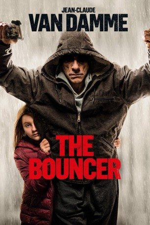

#10128 The Bouncer
Alternativ: Lukas (Englischer Titel)
 
 IMDB-Wertung: 6.3 / 10
IMDB-Wertung: 6.3 / 10  Metascore: 0
Metascore: 0 
Der Türsteher Lukas bemüht sehr darum, seine achtjährige Tochter zu erziehen. Eines Tages verliert Lukas bei einer Auseinandersetzung mit einem Klienten die Kontrolle und kommt ins Gefängnis, während seine Tochter vom Jugendamt betreut wird. Doch plötzlich wendet sich das Blatt und Interpol benötigt die Hilfe des Türstehers, um einen kriminellen Anführer zu beseitigen. Im Gegenzug könnte er wieder auf freien Fuß kommen und darf sich wieder um seine Tochter kümmern.
Jahr: 2018
Dauer: 94 Minuten
FSK: 16
Land: Frankreich Studio: Constantin FilmTonspuren:
Untertitel:
Auflösung: 1080p (1920x808) Größe: 2785 MB
Genre: Action
Regisseur: Julien Leclercq
Drehbuch: Jérémie Guez
Soundtrack:
Darsteller:
 Jean-Claude Van Damme als Lukas
Jean-Claude Van Damme als Lukas- Sveva Alviti als Lisa
 Sami Bouajila als Zeroual
Sami Bouajila als Zeroual- Kevin Janssens als Geert
- Dimitri 'Vegas' Thivaios als Agresseur boîte de nuit
- Catherine Haduca als Friend
- Kevin Van Doorslaer als Homme chalet
- Sam Louwyck als Jan
- Kaaris als Omar
- Alice Verset als Sarah
- Carlos Schram als Policier
- Christian Bronchart als Bar Strip
- Laurent D'Elia als Patron night-club
- Cecilia Ngo als Serveuse
- Jean-Claude Soetens als Client Hôtel
- Stijn Vandeput als Clubber
Datei: X:\2018(A-F)\Bouncer, The (2018, FSK16, 1920x808).mkv seit 08.12.2018
Festplatte: HD 2017(A-Z)-2018(A-F)
 Es gibt insgesamt 151 Filme in der Gruppe '2018(A-F)'
Es gibt insgesamt 151 Filme in der Gruppe '2018(A-F)'